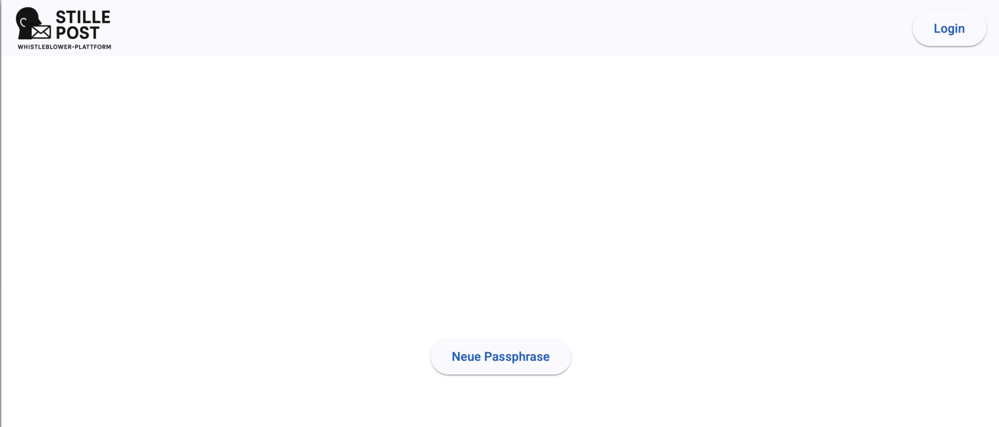
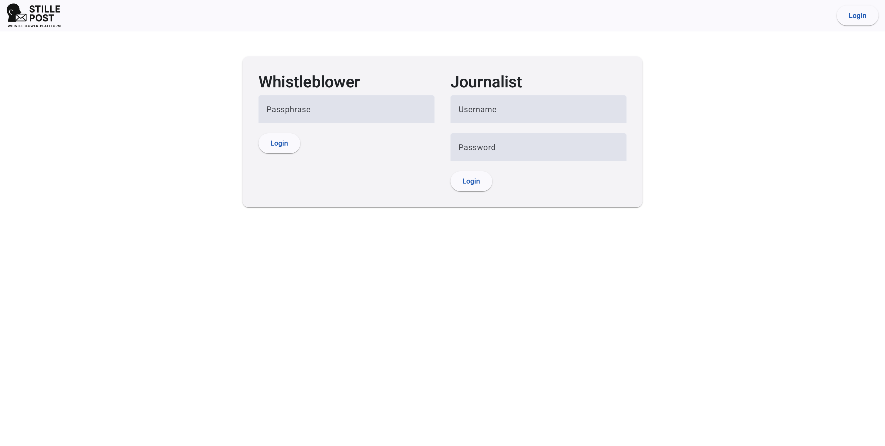
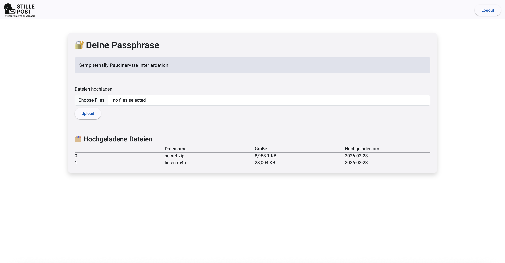
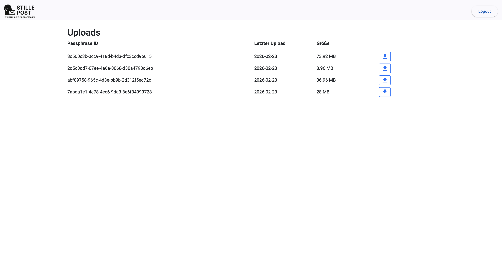

WhistleDrop – Secure Reporting Platform
A web-based whistleblower platform with a strong focus on confidentiality, anonymity, and cryptographic security.

Key Facts
Tech Stack
Project description
WhistleDrop is a secure gateway for anonymous whistleblowing developed in Python. It utilizes advanced cryptographic methods to ensure that the identity of the user remains hidden from both the platform and the recipient. The architecture is designed to be resilient against traffic analysis and metadata leaks by operating exclusively as a Tor Hidden Service.
Core Engineering Concepts:
- Trustless Server Architecture: The server acts as a blind drop-box. It never possesses the private keys required to decrypt the data, ensuring that even a server seizure yields no readable intelligence.
- Hybrid Encryption Scheme: Implemented a dual-layer cryptographic process where files are encrypted in-memory using ephemeral symmetric keys (AES), which are then immediately encapsulated using the journalist's public RSA 4096-bit key.
- Mnemonic Identity Protection: Replaced traditional user accounts with an 8-word passphrase system, allowing whistleblowers to authenticate without leaving database traces or requiring physical documentation.
- Anti-Forensic Data Handling: Designed strictly to prevent unencrypted data from ever touching the persistent storage (HDD/SSD). All sensitive operations occur in volatile memory (RAM).
Key Challenge: Designing a "One-Time-Use" public key infrastructure to prevent key reuse attacks and ensure that each submission session is cryptographically isolated.
Insights
Screenshots from the WebUI.


